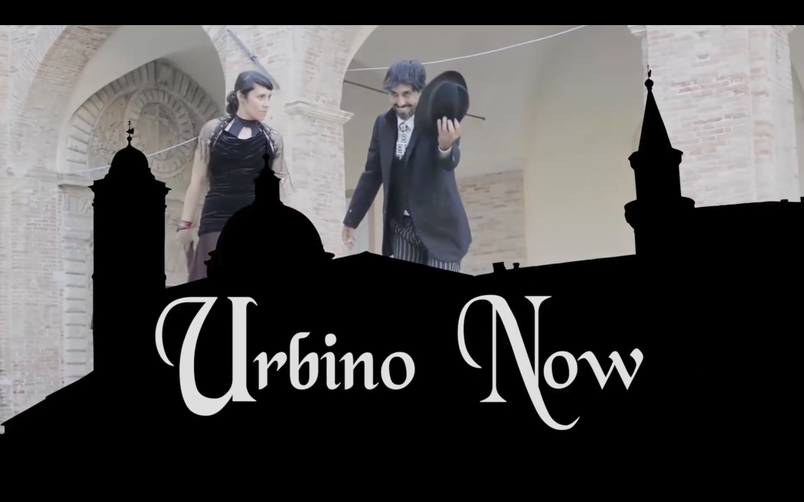
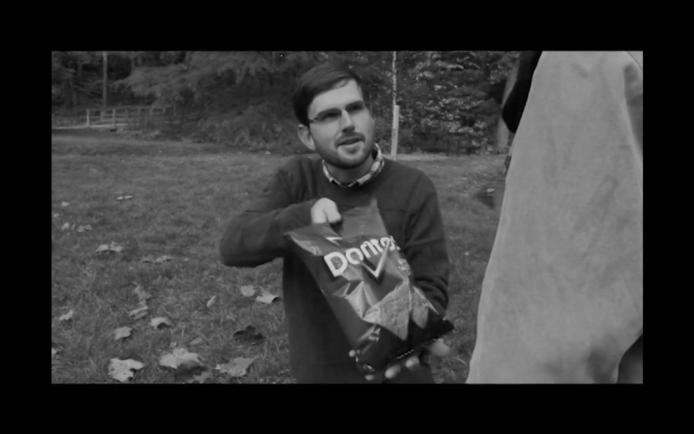

<div class="showreel">
  <h1>SHOWREEL</h1>
  <p class="subtitle">(Click reel to play it below)</p>
  <div class="row">
    <div class="gallery col-4">
      <a target="iframe_a" href="https://player.vimeo.com/video/135150260?color=ffffff&title=0&byline=0&portrait=0">
        
        <div class="desc"><i>Urbino Now</i> is an online magazine from my study abroad program in the summer of 2015. I shot the host segments, the interview for the pottery maker, and the b-roll for the elderly store owner. We had the help of several translators.</div>
      </a>
    </div>

    <div class="gallery col-4">
      <a target="iframe_a" href="https://player.vimeo.com/video/177833512?color=ffffff&title=0&byline=0&portrait=0">
        
          <div class="desc"><i>The Doritos Super Bowl Ad</i> was an entry into the competition. I came up with the idea, and produced it with a partner.</div>
      </a>
    </div>

    <div class="gallery col-4">
      <a target="iframe_a" href="https://player.vimeo.com/video/154119672?color=ffffff&title=0&byline=0&portrait=0">
        
        <div class="desc"><i>Breaking and Entering</i> is a short film I produced with 1 partner, 7 main actors, and 11 locations - all while being a full-time student. I'd like to thank Tarantino for inspiring this film.</div>
      </a>
    </div>

    <div class="row">
      <div class="video-player col-12">
        <iframe src="" frameborder="0" name="iframe_a" webkitallowfullscreen mozallowfullscreen allowfullscreen></iframe>
      </div>
    </div>

  </div>
</div>
